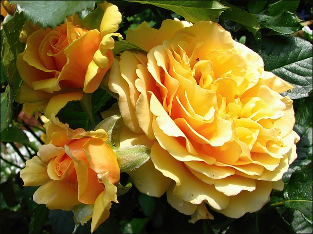
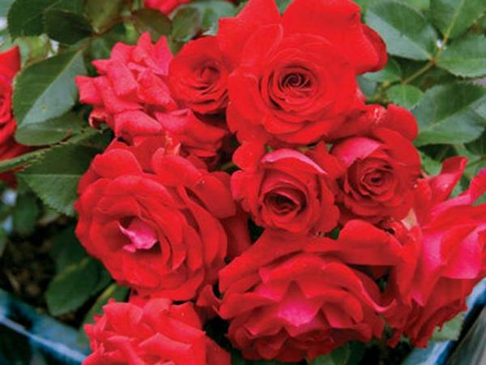
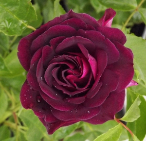

Floribunda Roses
Tweet Follow @111iamtestFloribunda (Latin for "many-flowering") is a modern group of garden roses that was developed by crossing hybrid teas with polyantha roses. The idea was to create roses that bloomed with the polyantha profusion, but with hybrid tea floral beauty and color range. Floribunda roses offer a bouquet on every branch. The small flowers look like elegant hybrid tea blooms but appear in clusters instead of one flower per stem. Sizes of these hardy roses vary from compact and low-growing to a more open habit and heights of 5 to 6 feet, ideal for tall hedges. The foliage on floribunda roses tends to shrug off diseases, making for a low-maintenance plant that delivers maximum impact with its continuous bloom cycles.

Amber Queen
This Floribunda rose was hybridized by Harkness in 1983. It is a medium, compact rose that reaches 3 to 4 feet in height. It has a large, copper red to medium green, semiglossy, and disease resistant foliage. It produces apricot gold blooms, 25 to 30 petals each, that are ruffled and have a cup shape. The rose possesses an intense fragrance. Amber Queen won 5 awards, including the New Zealand Gold Star of the South Pacific 1988 award. This is a hardy, compact bush that produces clusters of blooms for the garden or a vase. Bushes planted in a group make a striking focal point.

Black Cherry
This Floribunda rose was hybridized by Zary in 2006. It is a vigorous rose that grows upright, reaching 3.5 to 5 feet in height. It has a medium, medium green, glossy foliage. It produces dark red blooms with blackening, 20 to 25 petals each. The rose possesses slight, damask fragrance. Black Cherry won the Jackson & Perkins' Floribunda of the year 2006 award. This rose is novel in coloration and true to its name, beginning with a blackening around the tips of the buds and unfurling to a cherry red.

Burgundy Iceberg
This Floribunda rose was hybridized by Weatherly in 2003. It is a medium, rounded, and bushy plant that grows upright, reaching 3 to 4 feet in height. It has a large, light green, and glossy foliage with a few thorns. It produces purple-red blooms with a burgundy and cream reverse, 20 to 25 petals each. The rose possesses slight, honey fragrance. Its dark reddish-purple blooms intensify in cooler weather. This rose is an outstanding bloomer for all types of landscape uses.